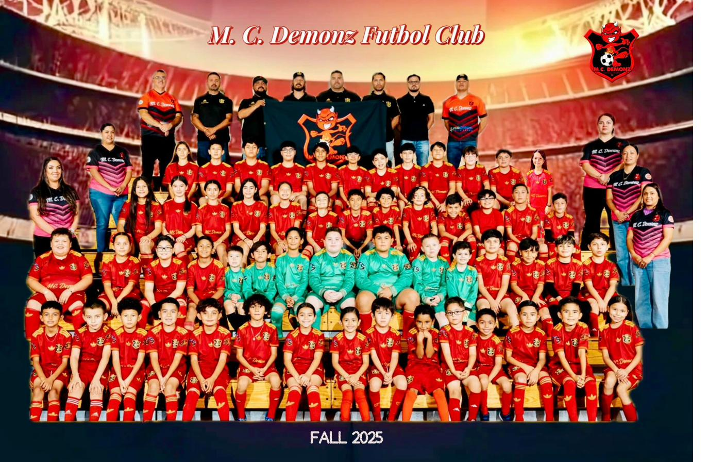

About Us
M.C. Demonz Futbol Club was established in 2007 in Yuma County, dedicated to developing young soccer players through quality coaching and competitive play.
Yuma County Youth Soccer Since 2007
M.C. Demonz Futbol Club was established in 2007 in Yuma County, dedicated to developing young soccer players through quality coaching and competitive play.